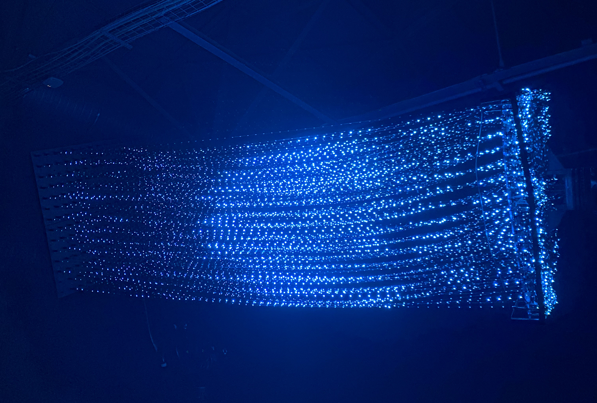

Нейросети в веб-дизайне
Нейросети в веб-дизайне: Как ИИ меняет творческий процесс?
🌐 С развитием технологий нейросети становятся важным инструментом в веб-дизайне. Они позволяют автоматизировать процессы и улучшать качество работы. В современных условиях существует множество нейросетей, которые могут быть полезны в различных областях веб-дизайна.
🖥️ Например, одна из самых известных нейросетей — GPT-4 от OpenAI. Она позволяет генерировать оригинальные тексты и контент для сайтов, помогая создать мощную SEO-стратегию. Также стоит отметить DeepAI, которая предлагает API для генерации изображений и текста, что упрощает создание уникального контента. Не менее полезной является Chatbot API от Dialogflow, представляющий собой нейросетевой движок для создания интерактивных чат-ботов. Это значительно улучшает пользовательский опыт на сайте. Google Cloud Vision является ещё одной мощной нейросетью, которая анализирует изображения, включая распознавание объектов и текстов, что помогает делать сайты более информативными и доступными. Добавим к этому Zapier — инструмент автоматизации, который помогает интегрировать различные API, в том числе нейросети, для выполнения задач на веб-сайтах.
📝 Переходя к текстам, важно упомянуть Grammarly, которая использует ИИ для проверки грамматики и стиля, позволяя писать более чёткие и профессиональные тексты. Copy.ai также заслуживает внимания, так как может эффективно генерировать рекламные тексты и описания продуктов, улучшая качество контента и сокращая время на его создание. Не менее полезной оказывается нейросеть Wordtune, помогающая улучшать и переформулировать тексты, предоставляя пользователям различные варианты фраз. Среди инструментов для генерации различных типов контента выделяется Jasper (Jarvis), который может создавать статьи, блоги и маркетинговые тексты. И, конечно же, стоит сказать о INK Editor, который помогает писать SEO-оптимизированные тексты, предлагая множество рекомендаций и предотвращая плагиат.
🎨 Для UX/UI задач идеальным решением станет Uizard. Этот инструмент автоматизирует проектирование интерфейсов, что позволяет быстро создавать прототипы без необходимости в знаниях программирования. Figma с плагинами тоже использует ИИ для генерации компонентов и цветовых схем, значительно упрощая работу дизайнеров. Не упустите возможность работать с Sketch2Code от Microsoft, которая превращает рисованные макеты в программный код. Также полезной нейросетью является Remove.bg, которая автоматически удаляет фон с изображений, что сделает работу с фото ещё более эффективной. Нельзя забывать и о Adobe Sensei, помогающей улучшить дизайн, анализируя данные и предоставляя рекомендации на основе шаблонов.
🖼️ Когда речь заходит о визуальном контенте, DALL-E от OpenAI предлагает уникальные решения, создавая изображения на основе текстовых описаний. Не менее интересной является нейросеть DeepArt, которая применяет стили известных художников к изображениям, создавая художественные работы. Runway ML позволяет быстро создавать и редактировать изображения с использованием современных ИИ-технологий, облегчая работу с графикой. Платформу Artbreeder можно рассматривать как возможность для смешивания и создания новых изображений, что открывает широкий простор для творчества. А NVIDIA GauGAN превращает простые наброски в качественные пейзажи и сцены, что делает процесс иллюстрации интуитивно понятным и быстрым.
📈 В области маркетинга нейросети играют ключевую роль. Примером является Predictive Analytics, использующая ИИ для прогнозирования поведения потребителей и улучшения таргетинга. Инструменты для анализа настроений, такие как MonkeyLearn, помогают изучить отзывы и комментарии, чтобы понять, как клиенты воспринимают продукт или услугу. Не менее значимой будет AdCreative.ai, генерирующая креативные рекламные кампании и графику на основе предпочтений целевой аудитории. Платформа HubSpot предлагает инструменты для автоматизации маркетинга, что позволяет аналитикам улучшить эффективность своих кампаний. Crimson Hexagon от Brandwatch помогает анализировать социальные медиа и извлекать полезные инсайты о потребителях и актуальных тенденциях.
💻 Рассматривая возможности кодинга, можно выделить GitHub Copilot — ИИ-помощник, который предлагает автозаполнение кода и поддерживает разработчиков, позволяя создать качественный код быстрее. TabNine служит отличным примером нейросети, использующей глубокое обучение для предложений по коду, что ускоряет разработку. Kite предлагает удобное автозавершение кода на разных языках программирования, чего не может не понадобиться разработчикам. DeepCode помогает анализировать код и выявлять его уязвимости, предоставляя рекомендации для повышения безопасности и производительности. Нейронная сеть Grok 4 — это современный инструмент, который демонстрирует выдающиеся способности в программировании и написании кода. Она способна генерировать, отлаживать и оптимизировать код на различных языках программирования, что значительно ускоряет процесс разработки. Завершает этот раздел Codex от OpenAI — нейросеть, способная превращать текстовые описания в работающий код, что значительно упрощает автоматизацию программирования.
🔍 Cutout Pro представляет собой нейросеть, специально разработанную для автоматического удаления фона из изображений. Эта система использует мощные алгоритмы машинного обучения для точного выделения объектов на фото. Она особенно актуальна для дизайнеров и маркетологов, ведь Cutout Pro значительно облегчает процесс редактирования изображений и позволяет быстро создавать профессиональный визуальный контент. Поддержка разнообразных форматов изображений делает эту нейросеть незаменимой как для веб-дизайна, так и для создания графики для социальных сетей.
Таким образом, нейросети открывают новые горизонты для веб-дизайна, улучшая процессы создания, оптимизации и интерпретации данных. Их использование способствует не только повышению качества работы, но и значительной экономии времени, что увеличивает эффективность Вашей команды. Внедрите эти инструменты в свою практику и откройте для себя новые возможности, которые предлагает мир нейросетей!
Фотография с фестиваля Digital rain АНТИХРУПКОСТЬ 3.D